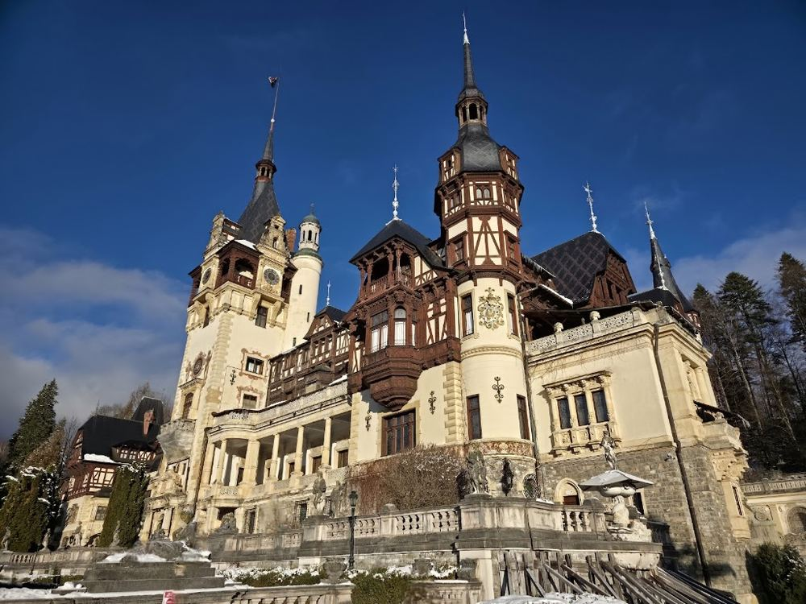

טירת פלש, סינאיה (סיור מודרך)
4.7/5 Google · 77,012- שעות
- אוגוסט (לפי רישומים מ-2026): ג' וה'–א' 9:15–16:15, ד' 11:00–16:15, סגור בשני; כרטיסים לפי שעה עם הגבלת מבקרים יומית. מתוכנן ליום ו' 20 באוגוסט (פתוח, שעה ראשונה 9:15). לבדוק ב-bilete.peles.ro ל-2027.
- מחיר למשפחה
- כ-225 לי"י (כ-42 €): 2 מבוגרים × 100 לי"י (קומת קרקע + קומה ראשונה) + תעריף תלמיד 25 לי"י לילד בן 7; ילדים מתחת לגיל 7 חינם (ייתכן שצריך להזמין כרטיס חינם). הערכה לפי עמוד של צד שלישי מ-2026; חנות הכרטיסים הרשמית לא נפתחה. אישור צילום בתוספת. הערכה
- זמן
- שעתיים (סיור מודרך כ-45–60 דקות + הגנים)
טירת אגדות אמיתית ביער: אולמות עץ מגולפים, אולם ויטראז'ים, שריונות ותיאטרון. המדריך שומר על סיור קצר; מכסים נעליים בכיסויי בד. יום ו' 20 באוגוסט הוא לפני עומס סוף השבוע (יום ראשון הוא העמוס ביותר; ביום שני סגור): כדאי להזמין באינטרנט את השעה הראשונה; תוכנית יום 2 משתמשת בפתיחה של 9:15. מתאימה לילדים כי היא קצרה וקסומה; הנסיעות האמיתיות מגיעות מיד אחרי, ברכבל סינאיה ובמגלשת ההרים.
ניווט · Google Maps · Peleș Museum – opening hours · WowBrasov – Peleș tickets, hours (2026)